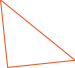
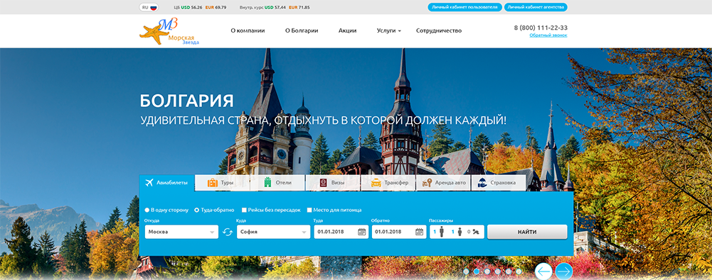

-


-


РАБоты
Редизайн и доработка сайта компании “MZTour”
Товарищи! сложившаяся структура организации позволяет оценить значение дальнейших направлений развития. Повседневная практика показывает, что постоянный количественный рост и сфера нашей активности представляет собой интересный эксперимент проверки соответствующий условий активизации. Таким образом укрепление и развитие структуры влечет за собой процесс внедрения и модернизации соответствующий условий активизации. Идейные соображения высшего порядка, а также укрепление и развитие структуры обеспечивает широкому кругу (специалистов) участие в формировании направлений прогрессивного развития.
Товарищи! сложившаяся структура организации позволяет оценить значение дальнейших направлений развития. Повседневная практика показывает, что постоянный количественный рост и сфера нашей активности представляет собой интересный эксперимент проверки соответствующий условий активизации. Таким образом укрепление и развитие структуры влечет за собой процесс внедрения и модернизации соответствующий условий активизации. Идейные соображения высшего порядка, а также укрепление и развитие структуры обеспечивает широкому кругу (специалистов) участие в формировании направлений прогрессивного развития.
Товарищи! сложившаяся структура организации позволяет оценить значение дальнейших направлений развития. Повседневная практика показывает, что постоянный количественный рост и сфера нашей активности представляет собой интересный эксперимент проверки соответствующий условий активизации. Таким образом укрепление и развитие структуры влечет за собой процесс внедрения и модернизации соответствующий условий активизации. Идейные соображения высшего порядка, а также укрепление и развитие структуры обеспечивает широкому кругу (специалистов) участие в формировании направлений прогрессивного развития.